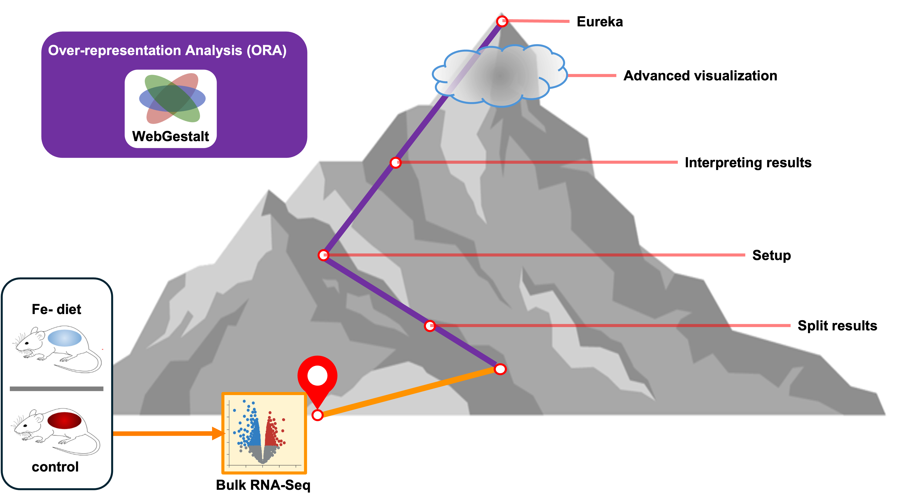

Functional analysis and ORA
Objectives
- Discuss the three critical questions that functional analysis addresses.
- Introduce the three high-level approaches to functional analysis
- Introduce the key concepts behind overrepresentation analysis (ORA).
- Outline the topics for this workshop.
Why Functional analysis
Consider this plot:
How would you interpret it?
- Fold change: Magnitude of the effect
- p-value: Statistical significance 2a) FDR/Adjusted p-value: significance adjusted for multiple test correction
What does it show in terms of the biology of the model system? In terms of the research question?
Research question may involve specific genes, but is invariably rooted in biological systems. Functional analysis can bridge this gap.
Functional analysis (aka
enrichment analysis, pathway enrichment analysis, …) Functional analysis
identified patterns in your results and compares them to known
biological patterns.
Imagine we constructed this plot based on the volcano plot above:
!(Curiously simple enrichment plot of five reference gene sets)[]
Which pathways are enriched? Are they statistically significant?
Let’s consider a single reference gene set in a very small universe
Visualizing enrichment !(Venn diagrams)[] ((query set) background set) = background proportion ((query set) reference set) = reference proportion
Diagram with gene sets query set reference set
2x2 table significant in category proportions = a/(a+b) gs in background proportions = (a+c) / N fold enrichment = significant in gs / gs in background = observed / expected = 2.667 The pathway is ~2.67× overrepresented among your significant genes relative to the background.
1 enrichment, <1 depletion fisher’s exact test / hypergeometric p = 0.014
FOLD: odds ratio OR = odds a (gene is in gs | significant) / odds(gene in gs| not significant) OR = 5; sig genes 5 times more likely to be in gs than background genes >1 positive assocation (<1 negative association)
Let’s define gene set.
Now expand to many gene sets.
(And now with FDR correction)
Common functional analysis approaches
- ORA
- FCS / GSEA
- TP
Similar steps / Similar inputs / Similar outputs Our focus / path in this workshop An example bulk RNA-Seq experiment.
Note that we are focusing on gene expression, but functional analysis can be applied to many experiment designs and analytes including non-coding RNA, protein expression, metabolites, and DNA methylation.

Summary
- Functional analysis is a useful extension of a differential expression (DE) analysis:
Adding biological context can connect observed DE patterns with the research question.
Adding biological context can reduce complexity: Functional analysis starts with hundreds to thousands of genes and emits dozens of biological processes or functional modules. This can greatly simplify interpretation.
Aggregating the effects of individual genes into processes or functional modules reveals coordinated changes.
Functional analysis results are simpler to generalize and compare across individual DE experiments.
- There are many tools, but three common approaches to functional analysis:
- Overreprestation Analysis (ORA)
- Functional Class Scoring (FCS) / Gene Set Enrichment Analysis (GSEA)
- Topology / Pathway analysis (TP)
- These approaches are distinct, but they get at the same three questions:
- Is my experimental result related to any biological phenomena?
- How strong is the relationship?
- How statistically significant is the relationship?
- The approaches share similar high-level steps and outputs:
- Start with a collection of genes, aka the query genes.
- Compare the query genes with other gene sets
- Determine enrichment, statistical significance, adjusted significance.
- Understanding ORA and FCS provides a solid foundation for running and interpreting functional analysis so the workshop will focus on these two approaches along with some discussion of key reference databases. We will start with an exploration of ORA on bulk RNA-Seq data from a specific mouse experiment.